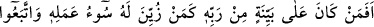
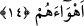

evleviyetle helâk edilebileceğini bildirmek içindir. Aynı şekilde ikinci şehri
Peygamberimiz (s.a.)’i şehirden çıkarmakla nitelemek de, işlediği cinâyetin oldukça
ağır oluşu sebebiyle bu şehrin helâke uğrama işinde daha bir evleviyete sahip olduğunu
bildirmek içindir.
“Onlara yardım eden çıkmadı.” Evet bu ifâde, bahsi geçen kimselerin kendi
kendilerine bu azaptan kurtulamadıklarını beyân etmenin ardından onların bir takım
yardımcılar vasıtasıyla da azaptan kurtulamadıklarını beyândır. Buradaki “fe” harfi,
başkası ile olanla bizzat olan arasında tertip içindir. Bu ifâde aynı zamanda geçmiş
halin hikayesidir.
İbn Abbâs (r.a.) ve Katâde (rh.a.) şöyle demişlerdir: Peygamberimiz (s.a.)
Mekke’den çıkıp Sevr mağarasına giderken Mekke’ye dönüp bir baktı ve şöyle
buyurdu: “(Ey Mekke!) Sen Allah’a ve bana beldelerin en sevimlisisin. Şâyet
müşrikler çıkarmasalardı ben senden çıkmaz ve ayrılmazdım.”[57] İşte Allah, bunun
üzerine bu âyeti indirmiştir. Buna göre bu âyet Medenî âyetler arasına konulmuş olan
Mekkî bir âyettir.
Âyette ruha ve onun ülkesine işâret edilmektedir ki o ülke, beden ve cesed ülkesidir.
İşte nice kalıplardan daha kuvvetli ve azametli kalıplar vardır ki Allah Teâlâ onları
ölümle helâk etmiştir. Onların, ölümü kendilerinden bertaraf edecek bir yardımcıları da
yoktur. Ruh, ölümle kuvvetli kalıbın dışında kalınca zayıf olan kalıbın tabiî ki dışında
kalır. Allah Teâlâ şöyle buyuruyor: “Nerede olsanız sağlam kaleler içinde de olsanız
yine ölüm sizi bulur.” (en-Nisâ 4/78).
Şâir der ki:
Coşkun bir sel için köprü altında durmak (rahat) yoktur,
Oysa biz gafletimizden göğün çatısı altında çok rahatız.
14. Rabbinden bir delîl üzerinde bulunan insan, kötü işi kendilerine süslendirilen
ve keyiflerine uyan kimseler gibi olur mu? (Olmaz elbet).
“Rabbinden bir delîl üzerinde bulunan insan” yâni Kur’ân-ı Kerîm, diğer mûcizeler
ve aklî deliller gibi Allah tarafından açık bir huccet ve parlak bir burhan üzere olup
dinin delillerine sımsıkı sarılan müminlerle “kötü işi,” zaten çok çirkin olan şer ve
mâsiyetleri “kendilerine süslendirilen ve” bu sebeple “keyiflerine uyan,” doğruluğuna
hiçbir delil ve yanlışlığına hiçbir şüphe olmayan bir takım sapıklıklara dalan “kimseler
gibi olur mu? (Olmaz elbet)”